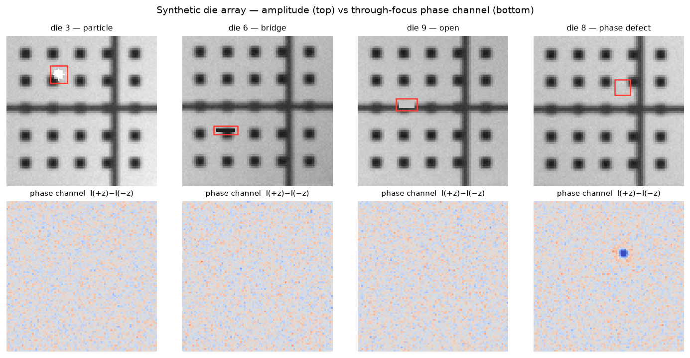
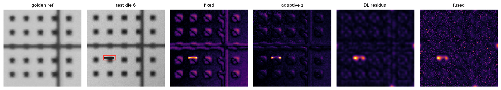
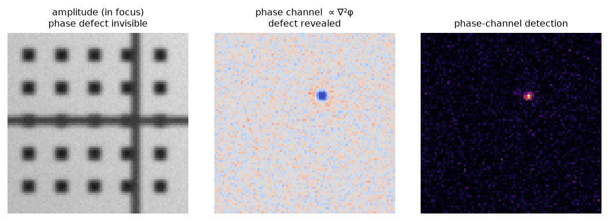
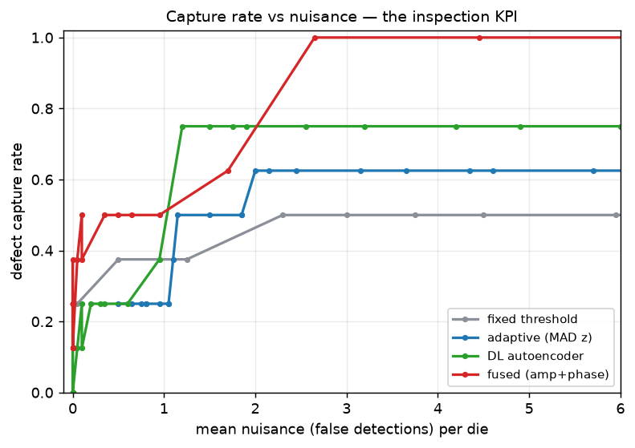

実機のアクチニック検査（レーザーテック ABICS/ACTIS 系）が使う手法を、単純なダイ間差分から一段引き上げて実装したデモンストレータ。ロバストなゴールデン参照＋サブピクセルDie-to-Die、適応統計検出（局所ノイズ正規化でnuisance抑制）、位相欠陥チャネル（through-focus, ∇²φ）、DL異常検出（オートエンコーダ）を、合成ダイ配列（20ダイ・振幅欠陥6＋位相欠陥2）で検証。評価は検査エンジニアの実KPI「捕捉率 vs 偽欠陥数」で。
繰り返しダイ（PSF・ショットノイズ・照明ムラ・サブピクセルずれ）に、粒子/ブリッジ/断線＋位相欠陥を注入。位相欠陥は振幅像では見えず、through-focus 位相チャネル I(+z)−I(−z) ∝ ∇²φ にのみ現れる。

ゴールデン参照（多ダイのロバスト中央値）とサブピクセル整合後の差分を検出。固定しきい値は縁の残差（サブピクセル整合の残り）でノイズだらけ。適応統計検出は参照ダイ群のばらつきで局所ノイズを推定して縁を自動的に抑制し、欠陥だけを浮かせる。

DUV（振幅）検査が見逃す位相欠陥（多層膜欠陥）を、through-focus の位相コントラストで検出。これがアクチニック（13.5nm EUV）検査の存在理由そのもの。位相欠陥の捕捉率：振幅チャネル 0.0 ／ 位相チャネル 1.0。

全8欠陥に対する捕捉率を偽欠陥数で評価。固定 < 適応 < DL と改善し、DLは0.75（=6/8, 全振幅欠陥）で頭打ち——振幅のみの手法は位相欠陥を構造的に捉えられない。位相チャネルを融合してはじめて 1.0 に到達。マルチチャネル検査が必要である定量的根拠。
